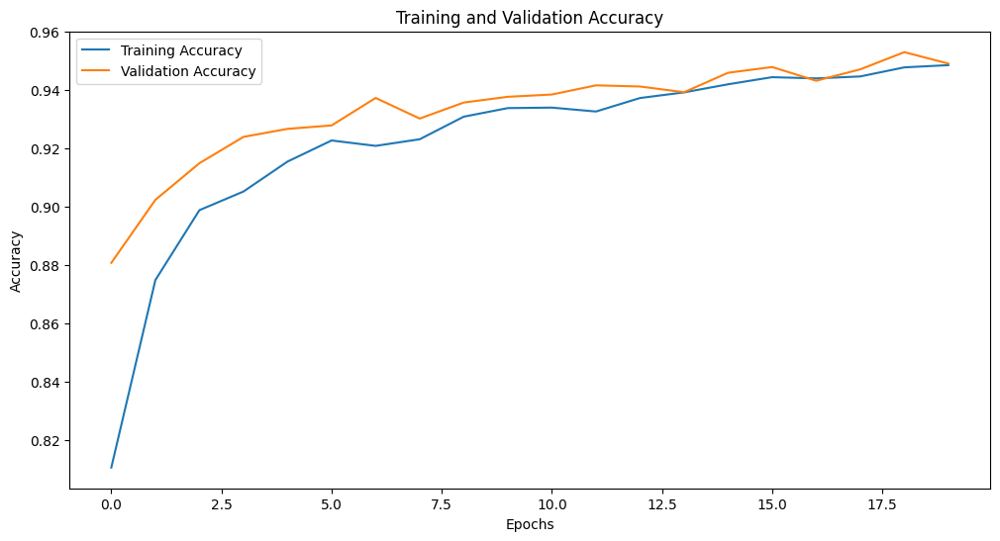

What is Fully Connected Neural Network (FCNN)
A Fully Connected Neural Network (FCNN) is a type of artificial neural network where each neuron in one layer is connected to every neuron in the subsequent layer. This dense connectivity allows the model to learn complex, non-linear relationships between features in the dataset. FCNNs are widely used for structured data, classification, regression, and other tasks requiring a global understanding of the input.
FCNNs are versatile and widely used for tasks like classification, regression, and general predictions involving structured data. Unlike models designed for spatial or sequential tasks, FCNNs focus on the relationships between features rather than preserving positional or temporal context. This makes them ideal for handling numerical and categorical inputs commonly found in tabular datasets.
One of the strengths of FCNNs lies in their flexibility, as they can be easily tailored by adjusting the number of layers, neurons, and activation functions to suit a variety of problems. However, their dense connectivity can also lead to overfitting, especially when working with smaller datasets. To mitigate this, techniques like Dropout, Batch Normalization, and early stopping are commonly employed.
In this project, the FCNN acts as a baseline model, leveraging its straightforward architecture to establish initial performance benchmarks. Its simplicity and adaptability provide a strong foundation before transitioning to more advanced models tailored for tabular data.
Fig.1. Simple Representation of the Fully Connected Neural Network
How a Fully Connected Neural Network (FCNN) Works
A Fully Connected Neural Network (FCNN) processes data by passing it through a series of interconnected layers. The journey begins with the input layer, where each neuron corresponds to a feature in the dataset. These neurons simply pass the input data to the next layer without performing computations, serving as the starting point for feature representation.
The hidden layers form the core of the FCNN, where most of the computation occurs. Each neuron in a hidden layer computes a weighted sum of the inputs it receives, adds a bias term, and applies an activation function. This operation introduces non-linearity, enabling the network to model complex relationships in the data. Common activation functions include ReLU (Rectified Linear Unit), which mitigates the vanishing gradient problem by allowing gradients to flow through the network effectively, and sigmoid or tanh, which are useful for specific tasks like binary classification or feature scaling.
During training, the network learns by minimizing a loss function, which quantifies the difference between the predicted output and the true target. For example, binary classification problems typically use binary cross-entropy, while regression tasks may use mean squared error. The training process involves backpropagation, where the network calculates gradients of the loss function with respect to each weight using the chain rule. These gradients are then used by an optimizer, such as SGD (Stochastic Gradient Descent) or Adam, to update the weights and biases, thereby improving the network's predictions over successive epochs.
The final layer, or the output layer, generates predictions. The number of neurons in this layer corresponds to the task at hand: a single neuron with a sigmoid activation for binary classification, multiple neurons with softmax activation for multi-class classification, or a single neuron with linear activation for regression. The output represents the model's interpretation of the input data, transformed through the hierarchical feature representation learned in the hidden layers.
An important aspect of FCNNs is their ability to generalize across data. To prevent overfitting, especially when the model is complex or the dataset is small, techniques like Dropout (randomly deactivating neurons during training) and Batch Normalization (stabilizing input distributions across layers) are applied. Additionally, hyperparameter tuning, such as adjusting learning rates, number of layers, and neurons, plays a critical role in optimizing the network's performance.
Overall, the FCNN operates as a pipeline that progressively transforms raw input data into increasingly abstract representations, ultimately producing predictions. Its dense connectivity and hierarchical structure allow it to model intricate patterns, making it a robust choice for a variety of supervised learning tasks.
Applications of Fully Connected Neural Networks (FCNNs):
1. Credit Scoring in Banking:
Banks and financial institutions use FCNNs to predict the likelihood of loan default or credit card delinquency. By analyzing a combination of numerical (income, credit history) and categorical (employment status, loan type) data, FCNNs identify patterns that help determine creditworthiness. Their ability to handle complex relationships between features allows for more accurate risk assessments.
2. Fraud Detection in E-Commerce:
E-commerce platforms employ FCNNs to detect fraudulent transactions by analyzing features like transaction amount, location, and device information. FCNNs learn subtle correlations between these variables, enabling the identification of anomalies indicative of fraud. This helps in minimizing financial losses while ensuring a smooth customer experience.
3. Demand Forecasting in Retail:
Retail businesses use FCNNs to forecast product demand by analyzing sales history, seasonal trends, and external factors like holidays or promotions. Accurate predictions help optimize inventory management, reduce waste, and ensure timely restocking of products.
4. Predictive Maintenance in Manufacturing:
Manufacturing companies leverage FCNNs to predict equipment failures by analyzing sensor data, machine logs, and operating conditions. This enables proactive maintenance, reducing downtime and increasing operational efficiency, which directly impacts profitability.
5. Disease Diagnosis in Healthcare:
FCNNs assist in diagnosing diseases by analyzing structured patient data, including lab results, symptoms, and medical history. For example, predicting diabetes or heart disease risk based on patient records. Their ability to model complex patterns in the data helps doctors make informed decisions quickly.
These real-world applications highlight the versatility of FCNNs across diverse industries, showcasing their potential to drive impactful solutions to complex problems.
Data Preparation:
Data preparation is a foundational step in the machine learning pipeline, particularly for Fully Connected Neural Networks (FCNNs), which rely on numerical representations of features to effectively learn patterns. This stage involves preprocessing raw data into a format suitable for the network to process, optimize, and make predictions. While FCNNs are versatile in handling a wide variety of structured data, careful preparation, such as normalization of numerical features and encoding of categorical variables, ensures that the model performs optimally. Proper data preparation not only accelerates the training process but also enhances the generalization capability of FCNNs, leading to improved accuracy and robustness in predictions.

The above is the sample of the data before pre-processing i.e., the raw data
The data preparation for Fully Connected Neural Networks encompasses several key activities:
Throughout the data preparation phase, several crucial steps were undertaken to ensure the dataset was primed for the analytical objectives set forth. Initial efforts were directed towards data cleaning, where inconsistencies and inaccuracies were rectified, alongside the removal of duplicate entries. A significant portion of this phase was dedicated to standardization, a process designed to mitigate potential biases and disparities in scale among the dataset's features. By scaling each feature to have a mean of zero and a standard deviation of one, a level playing field was established, ensuring equitable contribution of variables to the analytical process.
Further, the dataset underwent encoding procedures to facilitate the incorporation of categorical data into the modeling process. Label encoding was applied to ordinal variables, including 'Education_Level' and 'Income_Category', translating these into a numerical format that preserves order. For nominal variables such as 'Gender', 'Marital_Status', and 'Card_Category', one-hot encoding was utilized, expanding these categories into separate binary features, thus avoiding any imposition of artificial ordinality.
The challenge of an imbalanced class distribution within the "Attrition_Flag" column necessitated additional interventions. The disproportionate representation of "Existing Customer" instances over "Attrited Customer" instances presented a risk of model bias, potentially undermining the model's predictive accuracy for the minority class. To counteract this, Synthetic Minority Over-sampling Technique (SMOTE) was employed, generating synthetic instances of the underrepresented class, thus achieving a balanced class distribution with 8500 samples per class, elevating the dataset's total to 17000 samples.
Subsequent to addressing the imbalance, the dataset was partitioned into training and testing sets, adhering to an 80:20 ratio. This division was instrumental in allocating a substantial portion of data for model training while reserving a significant fraction for the impartial evaluation of model performance.
An integral component of the feature selection process involved the identification and elimination of redundant features, with 'CLIENTNUM' being a prime example. Its removal was predicated on its lack of relevance to the patterns of interest, thereby enhancing the model's generalizability and reducing the likelihood of overfitting.
The feature selection phase employed a tripartite methodology, incorporating Random Forest for determining feature importance, Recursive Feature Elimination (RFE) for its systematic reduction of the feature space, and correlation analysis with the target variable for its efficiency in identifying linear relationships. This comprehensive approach culminated in the distillation of two distinct feature sets: Set 1, comprising features of mutual significance across all three methods, and Set 2, encompassing features unanimously recognized as pivotal in the context of customer churn prediction. This dual-faceted strategy ensured the retention of features that are intrinsically relevant to the target variable, spanning both linear and nonlinear dimensions.
 Features Set-1 :
Features Set-1 :
Features Set-2 :
The above are the sample of the data, having undergone preprocessing steps as described earlier, are now prepared and will be used for FCNN.
Creating and Understanding the Importance of Disjoint Test-Train Splits
In the construction of predictive models, the partitioning of data into training and testing subsets is an indispensable step. For this analysis, an 70:30 split ratio was employed, allocating 70% of the data for training and the remaining 30% for testing. This division was methodically executed to ensure a substantial volume of data for the model to learn from, while still preserving a considerable portion for validation purposes. The training set functions as the foundational dataset upon which the model is built and refined, allowing the learning algorithms to discern and assimilate the intricate relationships between the features and the target variable.
The importance of creating a disjoint split between the training and testing sets lies in its capacity to provide an objective evaluation of the model's performance. A disjoint split guarantees that the testing set is a collection of observations that the model has not previously encountered during the training phase. This prevents the model from simply memorizing specific data points—a phenomenon known as overfitting—and instead encourages the development of generalization capabilities. By evaluating the model on the testing set, we gain insight into how well it can apply its learned patterns to new, unseen data, which is a robust indicator of its potential efficacy in real-world applications.
Training Data
Testing data
The implementation of Fully Connected Neural Networks, along with sample data and code, is available at the provided link. This resource encompasses comprehensive details for both implementations, offering a practical perspective on applying Fully Connected Neural Networks.
The performance of the Fully Connected Neural Network (FCNN) was evaluated using multiple metrics, including accuracy, precision, recall, F1-score, and AUC-ROC. Additionally, the training and validation loss/accuracy trends and the confusion matrix were analyzed to understand the network's learning behavior and predictive capabilities.
Training and Validation Trends:
Accuracy

Loss
Over the course of 20 epochs, the FCNN demonstrated consistent improvements in both training and validation metrics:
- Training Accuracy steadily increased from an initial 71.30% to 92.86%, showcasing the model's ability to progressively learn meaningful patterns from the training data.
- Validation Accuracy improved from 86.47% in the first epoch to 95.45% by the final epoch, indicating strong generalization capabilities and minimal overfitting.
- Training Loss decreased from 0.6645 to 0.2132, while Validation Loss dropped from 0.4193 to 0.1486, reflecting the network's ability to optimize its weights effectively during training.
The convergence of training and validation losses suggests that the model is neither underfitting nor overfitting, which is an essential indicator of a well-regularized and balanced learning process.
Confusion Matrix Analysis:
 The confusion matrix provides further insight into the model's classification performance:
- True Positives (1,212) and True Negatives (1,243) indicate that the majority of the positive and negative samples were correctly classified.
The confusion matrix provides further insight into the model's classification performance:
- True Positives (1,212) and True Negatives (1,243) indicate that the majority of the positive and negative samples were correctly classified.
- False Positives (32) and False Negatives (63) were minimal, reflecting the model's high precision (97.42%) and recall (95.05%).
The balanced distribution of errors highlights the model's robustness in handling both classes effectively, making it a reliable tool for practical deployment.
Evaluation Metrics:
The FCNN achieved exceptional results on the test dataset:
- Test Accuracy: 96.27%, confirming the model's high predictive reliability across unseen data.
- Precision: 97.42%, demonstrating its ability to avoid false positives, which is critical in contexts where incorrect classifications of positive instances have significant implications.
- Recall: 95.05%, signifying its ability to detect nearly all positive instances.
- F1-Score: 96.22%, balancing precision and recall to provide an overall measure of model effectiveness.
- ROC AUC: 99.22%, reflecting the model's outstanding capability to differentiate between positive and negative classes.
These results validate the effectiveness of the FCNN architecture for the given tabular dataset. The combination of steadily decreasing losses, increasing accuracy, and high evaluation metrics underscores the network's ability to extract meaningful patterns and make reliable predictions. The low error rates, coupled with a high AUC-ROC, demonstrate the model's utility in real-world applications where predictive accuracy and robustness are paramount.
The Fully Connected Neural Network (FCNN) has demonstrated exceptional performance in addressing the challenges of our tabular dataset. Through rigorous training and validation, the model achieved a high level of accuracy (96.31%) and robustness, as evidenced by its precision, recall, and AUC-ROC scores. The consistent reduction in training and validation loss, alongside steadily improving accuracy, underscores the model's capacity to generalize effectively across unseen data while avoiding overfitting. These results confirm the suitability of the FCNN for structured data analysis, where it effectively captures complex relationships between features.
The comprehensive evaluation, including the confusion matrix and performance metrics, highlights the FCNN’s reliability in minimizing misclassifications while maintaining a balance between precision and recall. This balance is particularly critical in real-world scenarios where errors can have significant implications. The model's ability to optimize its learning process and extract meaningful patterns has set a strong precedent for exploring and comparing more advanced deep learning architectures tailored for tabular data.
The FCNN serves as a solid baseline model for this project, offering insights into the dataset's structure and the potential for further improvement. Its performance provides a benchmark for evaluating other architectures, such as Wide & Deep Models and TabNet, paving the way for more advanced methods to enhance predictive power and interpretability. This work demonstrates the versatility and effectiveness of FCNNs in structured data applications, establishing a foundation for deeper exploration and innovation in the machine learning pipeline.